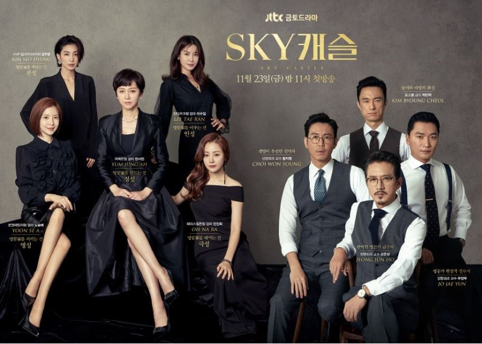
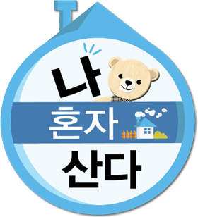

TV 프로그램
- 
스카이 캐슬
대한민국 상위 0.1%가 모여 사는 SKY 캐슬 안에서 남편은 왕으로, 제 자식은 천하제일 왕자와 공주로 키우고 싶은 명문가 출신 사모님들의 처절한 욕망을 샅샅이 들여다보는 리얼 코믹 풍자 드라마
- 
나 혼자 산다
독신 남녀와 1인 가정이 늘어나는 세태를 반영해 혼자 사는 유명인들의 일상을 관찰 카메라 형태로 담은 다큐멘터리 형식의 예능 프로그램

BTS In the Soop
숲에서 여유롭게 휴식을 즐기는 방탄소년단의 모습을 담은 프로그램